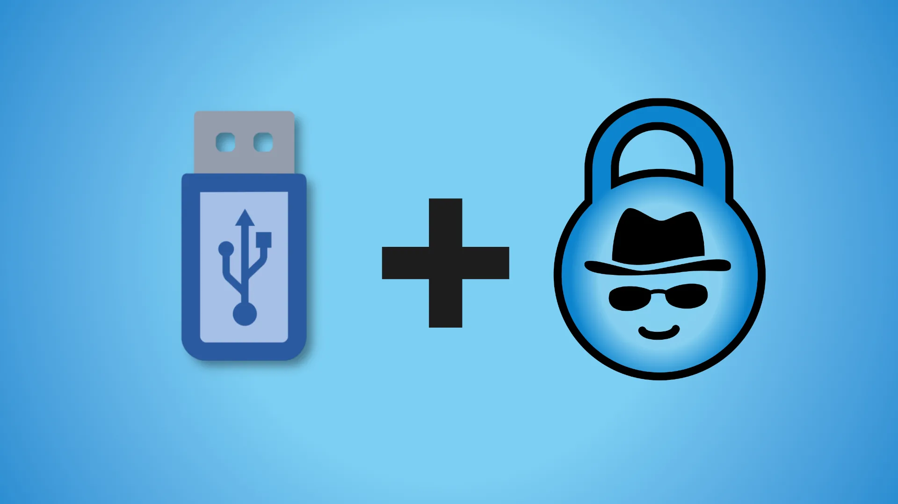
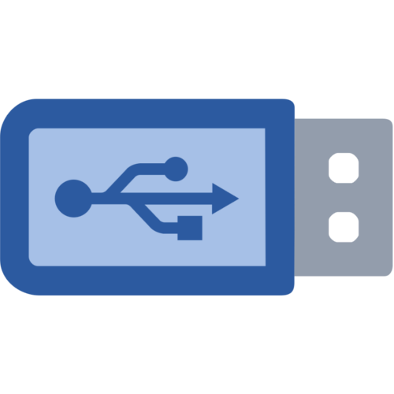

We believe security software like Whonix needs to remain Open Source and independent. Would you help sustain and grow the project? Learn more about our 14 year success story and maybe DONATE!
Printing and ScanningDocumentationSystem Hardening ChecklistPrevious page: Printing and ScanningIndex page: DocumentationNext page: System Hardening ChecklistInstallation of Whonix on a USB
- Live Mode
 grub-live
grub-live- Whonix on USB
-
Persistent Mode

Whonix can be used as a plug-and-play operating system on a USB data stick. This is particularly useful for users looking for a portable persistent or live operating system.
How-to: Install Whonix on USB

Yes, Whonix can be used on a USB.1. Select a host operating system.
Using Kicksecure on USB
Kicksecure is a security-focused operating system, which is particularly useful as a host operating system (OS) on USB.
2. Install Kicksecure on USB
See instructions
 Kicksecure USB Installation.
Kicksecure USB Installation.
3. Boot Kicksecure from USB.
4. Open a terminal.
Start Menu → System Tools →
QTerminal
5. Install Whonix on Kicksecure USB.
 Whonix Installation on Kicksecure is simple using Whonix Linux Installer for VirtualBox. It's just a
single command.
Whonix Installation on Kicksecure is simple using Whonix Linux Installer for VirtualBox. It's just a
single command.
whonix-lxqt-installer-cli
7. Live mode.
Optional: Kicksecure also comes with the grub-live
software package installed by default, which makes it possible to boot
the host operating system into Live
Mode.
8. Done.

Using Other Operating Systems on USB
2. Select a suitable host operating system.
3. Install it on USB.
There are a number of online guides explaining how to install Linux on a USB. These instructions can be followed to create a live Whonix USB, with the exception that both a supported virtualizer and Whonix must also be installed on the external media.
4. Install Whonix on a supported virtualizer.
5. Done.
Advantages of Whonix on USB
Better Security: A higher level of security is achieved by installing the host operating system(s) on a dedicated, (encrypted), external disk(s) such as a USB flash drive or others. [1] In the case of using Dual Boot, using physical external media reduces the risk of malware running on other operating system(s) infecting the host operating system.
Can be unplugged and securely stored: When Whonix disk(s) are not in use, they can either be removed or hidden.
Related
If it is actually booting into non-persistent live boot that you're interested in, look into Live Mode.
- Live Mode
-
grub-live
- Whonix on USB
-
Persistent Mode
Future
At this time, Whonix does not provide a USB creator / image. This might change in the future. See Whonix-Host Operating System Live ISO, Whonix-Host Installer. Community contributions are most welcome.
Footnotes
- e.g., eSATA or FireWire. FireWire should generally be avoided: * https://louwrentius.com/firewire-the-forgotten-security-risk.html * https://en.wikipedia.org/wiki/IEEE_1394#Security_issues
Categories: Documentation